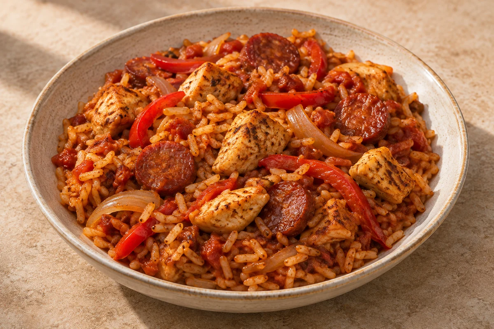

Rice & Bowls
Chicken & Chorizo Jambalaya
A one-pan Cajun rice dish with chicken, chorizo, red pepper and tomatoes. Serves 2.
Ingredient quantities update automatically

Ingredients
Method
Brown the chicken
Heat the olive oil in a large, deep, lidded frying pan or casserole over a medium-high heat. Add the chopped chicken and fry for about 5 minutes, turning until golden on the outside. Transfer to a plate; it will finish cooking with the rice.Soften the onion
Reduce the heat to medium. Add the diced onion to the same pan and cook for 3–4 minutes, stirring and loosening any browned bits.Add the pepper, chorizo and spice
Add the sliced red pepper, crushed garlic, sliced chorizo and Cajun seasoning. Cook for 5 minutes, stirring regularly, until the pepper starts to soften and the chorizo releases its oils.Add the rice and tomatoes
Return the chicken and any juices to the pan. Stir in the dry long-grain rice, then add the plum tomatoes with their juice, breaking up the tomatoes with a spoon. Pour in the chicken stock and stir well.Simmer gently
Bring to a gentle simmer, cover with a tight-fitting lid and reduce the heat to low. Cook for 20–25 minutes, until the rice is tender, the liquid has mostly absorbed and the chicken is cooked through. Check towards the end; if the rice is still firm and the pan looks dry, add a small splash of hot water, cover and cook for a few more minutes.Rest and serve
Remove from the heat and leave covered for 5 minutes. Gently fluff the rice, taste and serve. When increasing the servings, use a larger pan or split between pans; cooking time does not scale directly with portions.
Tips & leftovers
Storage
Cool rice as quickly as possible, ideally within 1 hour, and refrigerate in shallow portions. Eat the rice, and any leftovers mixed with it, within 24 hours. Keep other cooked components separate and use within 48 hours. Because the rice is mixed into the dish, the whole jambalaya has the 24-hour fridge limit.
Freezing
Divide freshly cooked jambalaya into shallow single portions, cool quickly and freeze within 1 hour of cooking. Label and use within 2 months for best quality. Defrost fully in the fridge and use within 24 hours; do not freeze a portion that has already been reheated.
Reheating
Reheat rice only once until steaming hot throughout and eat immediately. Heat other cooked components thoroughly, keeping cold toppings separate. Stir several times and check both the rice and chicken centres; add a splash of stock if dry.
Substitutions
Use chicken breast and chorizo as written. Use smoked paprika and extra chicken instead of chorizo for a different, less rich version. Keep long-grain rice unless adjusting liquid and cooking to another variety.
Keeping leftovers safe
Rice needs faster cooling: cool quickly, ideally within 1 hour, and refrigerate; use within 24 hours. If freezing freshly cooked rice, cool it quickly and freeze within 1 hour. Defrost in the fridge and use within 24 hours. Reheat only once until steaming hot throughout and eat immediately. Do not heat rice again if it was already reheated, including a heated microwave pouch. Keep the fridge at 0–5°C and the freezer around −18°C.
Food-safety guidance: Food Standards Agency: chilling and freezing · reheating leftovers · cooked rice.